Anleitung zur Anlage einer Partial-Credit-Kodierung
Anleitung Partial-Credit Kodierung
Einführung
Diese Anleitung beschreibt die Anlage von Partial-Credit-Kodierungen in Studio anhand von Beispielaufgaben aus Deutsch und Mathematik Primar. Dabei werden die unterschiedlichen Itemformate und die jeweiligen Schritte zur Umsetzung im IQB-Studio ausführlich erläutert.
Übersicht
| Fach | Itemformat | PC-Prinzip | Bewertung |
|---|---|---|---|
| DeP | Complex Multiple Choice 5 Zeilen x 2 Antwortoptionen |
Elementweise: FC= 2 (Alle 5 Antworten korrekt); PC = 1 (4 von 5 Antworten korrekt); No Credit (0,1,2 oder 3 von 5 Antworten korrekt) | 0-0-0-0-1-2 |
| DeP | Complex Multiple Choice 6 (oder mehr) Zeilen x 2 Antwortoptionen |
Elementweise: FC= 2 (Alle 6 Antworten korrekt); PC = 1 (4 oder 5 von 6 Antworten korrekt); No Credit (0,1,2 oder 3 von 6 Antworten korrekt) | 0–0–0–0–1–1–2 |
| DeP | Zuordnen – V1 9 Elemente x 4 Ablegelisten (mehrere Elemente-pro Ablegeliste , mind. 1 Element bleibt übrig) |
Zeilenweise: Für jede korrekte Zuordnung 1 Credit: No Credit (0 von 4 Zuordnungen sind korrekt) | 0–1–2–3–4 |
| DeP | Zuordnen – V2 6 Elemente x 5 Ablegelisten (mind. 1 Element bleibt übrig) |
Elementweise: mit FC = 2 (Alle Antworten korrekt); PC = 1 (Alle Antworten -1 korrekt); No Credit (0,1,2 oder 3 von 5 Antworten korrekt) | 0–0–0–0–1–2 |
| DeP | Verbale Kurzantwort – V1 3 Eingabefeldern |
Elementweise: Für jede korrekte Eingabe erhält SuS 1 Credit; FC = 3 (Alle Antworten korrekt), PC = 2 (2 von 3 korrekt); PC = 1 (1 von 3 korrekt). No Credit für 0 von 3 korrekt. | 0–1–2–3 |
| DeP | Verbale Kurzantwort – V2 2 Eingabefelder (Einzigartigkeitsprüfung) |
Elementweise Für jede korrekte Eingabe erhält SuS 1 Credit; FC = 2 (Alle Antworten korrekt), PC = 1 (1 von 2 korrekt oder 1 doppelt). | 0–1–2 |
| MaP | Langantwort 1 Eingabefeld |
Inhaltlich Bei korrekter Antwort erhält SuS 2 Credits, bei teilweise-korrekter Antwort erhält SuS 1 Credit | 0–1–2 |
| MaP | MC und Langantwort | Inhaltlich Bei korrekter MC-Auswahl UND korrekter Langantwort erhält SuS 2 Credits, bei korrekter MC-Auswahl UND teilweise-korrekter Langantwort erhält SuS 1 Credit. Bei falscher MC-Auswahl = No Credit. Bei korrekter MC-Auswahl UND falscher Langantwort = No Credit | 0-1-2 |
| MaP | Numerische Kurzantwort Mind. 3 Eingabefelder |
Elementweise: FC= 2 (Alle Antworten korrekt) und PC = 1 (Alle Antworten -1 korrekt) | 0–0–1–2 (Hier: für 3 Eingabefelder) |
| MaP | Complex Multiple Choice 5 Zeilen x 2 Antwortoptionen |
Elementweise: FC= 2 (Alle 5 Antworten korrekt); PC = 1 (4 von 5 Antworten korrekt); No Credit (0,1,2,3 von 5 Antworten korrekt) | 0-0-0-0-1-2 |
| MaP | Zuordnen – V1 Unendliche viele Elemente (Einstellung „Element kopieren”) × 4 Ablegelisten (mind. 1 Element bleibt übrig) |
Elementweise FC= 2 (Alle Antworten korrekt) und PC = 1 (Alle Antworten -1 korrekt) | 0–0–0–1–2 |
| MaP | Zuordnen – V2 Unendliche viele Elemente (Einstellung „Element kopieren”) × 9 Ablegelisten; Zuordnungskombinationen, Reihenfolge der Elemente UND zeilenweise Einzigartigkeit relevant |
Zeilenweise: FC= 2 (Alle Antworten korrekt) und PC = 1 (Alle Antworten -1 korrekt) | 0–0–1–2 |
| DeS | Breites Complex Multiple Choice 7 Zeilen x 4 Antwortoptionen |
Elementweise FC = |
FC = Full Credit
PC = Partial Credit
DeP = Deutsch Primar
MaP = Mathe Primar
DeS = Deutsch Sekundar
V1 = Variante 1
V2 = Variante 2
1. Deutsch Primar (DeP)
1.1 Complex Multiple Choice (CMC 5x2)
Beispielaufgabe: Prototypische Aufgabe „Bildergalerie”
IQB-Studio-Link: https://iqb-studio.de/#/a/1329/149210/preview
Itemformat: CMC mit 5 Zeilen x 2 Antwortoptionen
Partial Credit Prinzip: elementweise 0-1-2-3-4-5
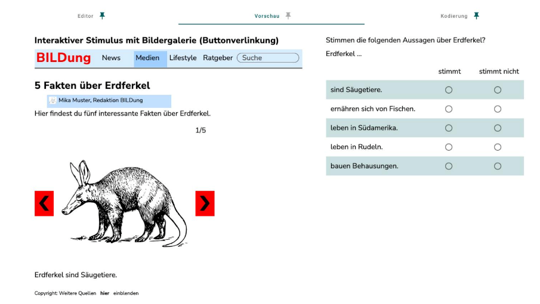
Bewertung: 0-0-0-0-1-2. (FC= 2 (Alle 5 Antworten korrekt); PC = 1 (4 von 5 Antworten korrekt); No Credit (0,1,2 oder 3 von 5 Antworten korrekt)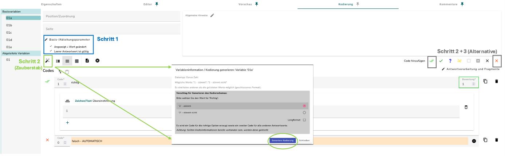
Geschlossene Kodierung der Basisvariablen 01a, 01b, 01c, 01d, 01e
Schritt 1: Basis-/Ableitungsparameter anpassen (Häkchen bei “angezeigt = Wert geändert” und “leerer Antwortwert ist gültig”)
Schritt 2: Mit Zauberstab die richtig Antwortoption (1 = „stimmt”, 2 = „stimmt nicht”) auswählen (s. Allgemeine Hinweise für Kodieranweisung).
Rotes Kreuz für „falsch-AUTOMATISCH wird mit Zauberstab automatisch hinzugefügt.
Diese Schritte für alle Basisvariablen wiederholen.
Geschlossene Kodierung der Abgeleiteten Variable 01
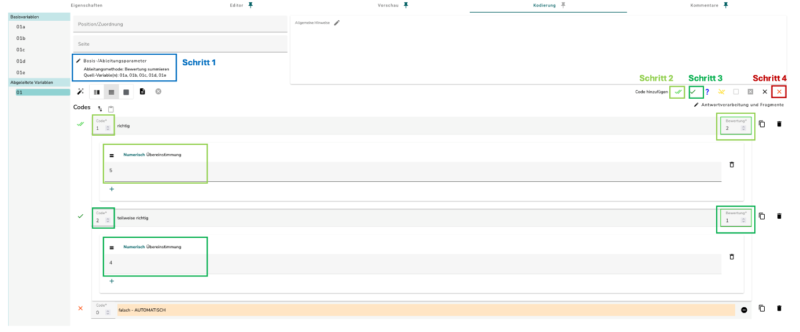
Schritt 1: Basis-/ Ableitungsparameter auswählen: Ableitungsmethode: Bewertung summieren. Quell-Variablen auswählen: 01a, 01b, 01c, 01d, 01e (alle Basisvariablen des Items)Schritt 2: Richtig-Code (Doppelter grüner Haken) auswählen. Code 1 nennen. Bei Numerische Übereinstimmung maximale Basisvariablen-Anzahl eintragen (hier = 5). Oben rechts Bewertung = 2 auswählen.
- Code 1: 5 von 5 Antworten korrekt (2 Credits)
Schritt 3: Einen Teilweise-Richtig-Code (Ein grüner Haken) anlegen. Code 2. Bei Numerische Übereinstimmung entsprechend korrekte Anzahl an Antworten für PC Schema eintragen (Hier = 4). Oben rechts Bewertung auswählen (Hier = 1)
- Code 2: 4 von 5 Antworten korrekt (1 Credit)
Schritt 4: Rotes Kreuz „falsch-AUTOMATISCH” auswählen. Dieser Falsch-Code wertet alle Antworten mit 0, wenn keine, eine, zwei oder drei CMC-Option(en) korrekt ist/sind.
- Falsch Code: 0 oder 1, 2 oder 3 korrekte Antwort(en) (0 Credits)
1.2. Complex Multiple Choice (CMC 6x2)
Beispielaufgabe: Prototypische Aufgabe „CMC_6x2”
IQB-Studio-Link: https://iqb-studio.de/#/a/1329/149325/preview
Itemformat: CMC mit 6 Zeilen x 2 Antwortoptionen
Partial Credit Prinzip: elementweise 0-1-2-3-4-5-6
Bewertung: 0-0-0-0-1-1-2. (FC= 2 (Alle 6 Antworten korrekt); PC = 1 (4 oder 5 von 6 Antworten korrekt); No Credit (0,1,2 oder 3 von 6 Antworten korrekt)
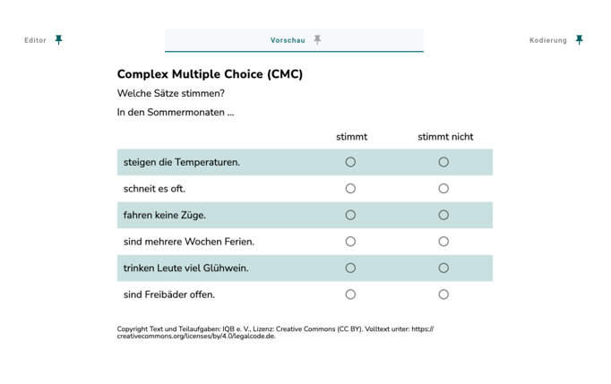
Geschlossene Kodierung der Basisvariablen 01a, 01b, 01c, 01d, 01e, 01f
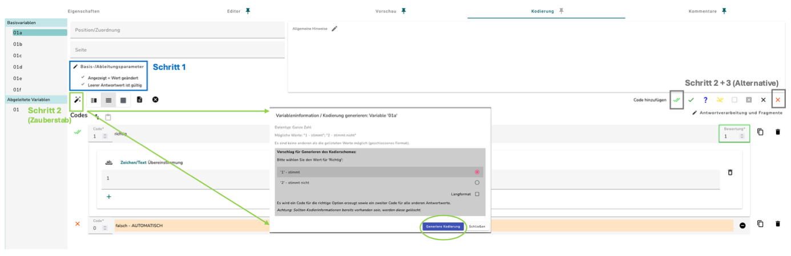
Schritt 1: Basis-/Ableitungsparameter anpassen (Häkchen bei “angezeigt = Wert geändert” und “leerer Antwortwert ist gültig”)
Schritt 2: Mit Zauberstab die richtig Antwortoption (1 = „stimmt”, 2 = „stimmt nicht”) auswählen (s. Allgemeine Hinweise für Kodieranweisung)
Rotes Kreuz für „falsch-AUTOMATISCH wird mit Zauberstab automatisch hinzugefügt.
Diese Schritte für alle Basisvariablen wiederholen.
Geschlossene Kodierung der Abgeleiteten Variable 01
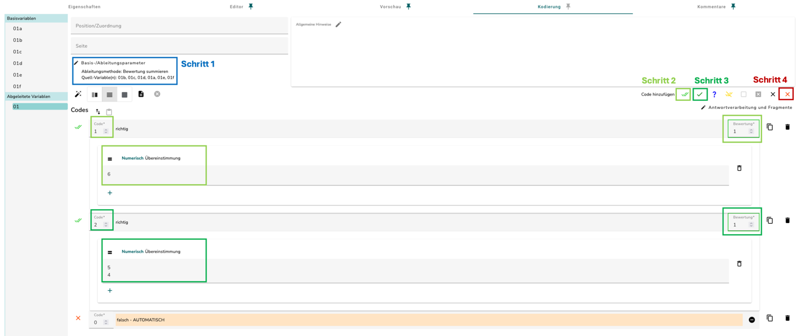
Schritt 1: Basis-/ Ableitungsparameter auswählen: Ableitungsmethode: Bewertung summieren. Quell-Variablen auswählen: 01a, 01b, 01c, 01d, 01e (alle Basisvariablen des Items)
Schritt 2: Richtig-Code (Doppelter grüner Haken) auswählen. Code 1 nennen. Bei Numerische Übereinstimmung maximale Basisvariablen-Anzahl eintragen (hier = 6). Oben rechts Bewertung = 2 auswählen.
- Code 1: 6 von 6 Antworten korrekt (2 Credits)
Schritt 3: Einen Teilweise-Richtig-Code (Ein grüner Haken) anlegen. Code 2. Bei Numerische Übereinstimmung entsprechend korrekte Anzahl an Antworten für PC Schema eintragen (Hier = 4 und 5). Oben rechts Bewertung auswählen (Hier = 1)
- Code 2: 4 oder 5 Antworten korrekt (1 Credit)
Schritt 4: Rotes Kreuz „falsch-AUTOMATISCH” auswählen. Dieser Falsch-Code wertet alle Antworten mit 0, wenn keine, eine, zwei oder drei CMC-Option(en) korrekt ist/sind.
- Falsch Code: 0 oder 1, 2 oder 3 korrekte Antwort(en). Bewertung = 0.
1.3. Zuordnen (Variante 1)
Anmerkung: mehrere Elemente-pro Ablegeliste mind. 1 Element bleibt übrig
Beispielaufgabe: Prototypische Aufgabe „Internetseite” Item 03
IQB-Studio-Link: https://iqb-studio.de/#/a/1329/149211/preview
Itemformat: Zuordnen mit 9 Elementen x 4 Ablegelisten
Partial Credit Prinzip: zeilenweise 0-1-2-3-4
Bewertung: 0-1-2-3-4 (1 Punkt pro Ablegeliste (03a, 03b, 03c, 03d) und Elementkombination vergeben, also Gesamtbewertung = 4; No Credit wenn 0 von 4 Zeilen korrekt zugeordnet wurden)
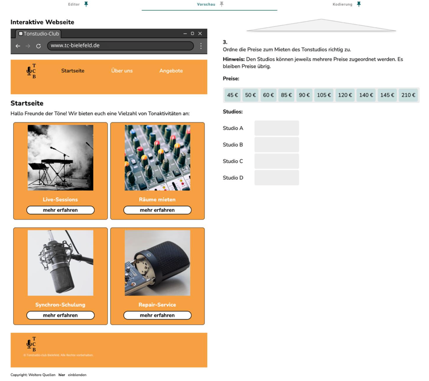
Geschlossene Kodierung der Basisvariablen 03a, 03b, 03c, 03d
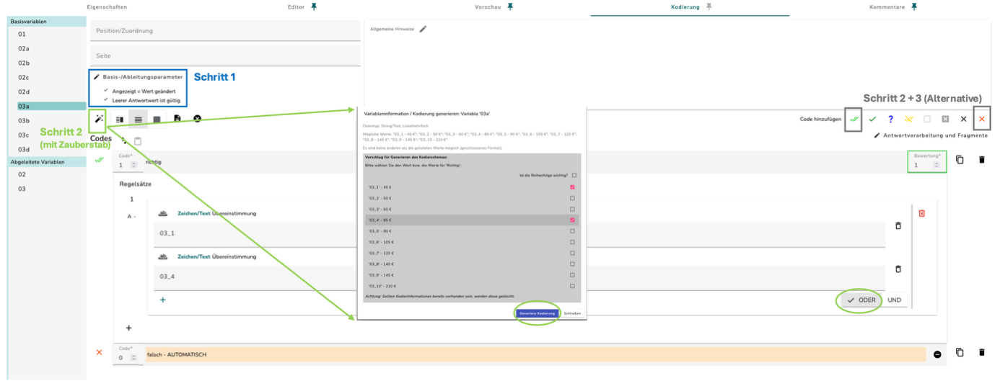
Schritt 1: Basis-/Ableitungsparameter anpassen (Häkchen bei “angezeigt = Wert geändert” und “leerer Antwortwert ist gültig”)
Schritt 2: Mit Zauberstab die richtigen Elemente auswählen (Hier 03_1 und 03_4; s. Allgemeine Hinweise für Kodieranweisung).
Rotes Kreuz für „falsch-AUTOMATISCH wird mit Zauberstab automatisch hinzugefügt.
Diese Schritte für alle Basisvariablen wiederholen.
Alternative Kodierung ohne Zauberstab:
Schritt 2: Richtig-Code (Doppelter grüner Haken) anlegen. Code 1 nennen. Bei Zeichen/Text Übereinstimmung die passenden Elemente in einzelnen Regelsätzen (Hier 03_1 und 03_4) eintragen (Für Elementbezeichnung s. Editor, für Kodieranweisung s. Allgemeine Hinweise).
Schritt 3: Rotes Kreuz “falsch - AUTOMATISCH” für alle falschen Antworten auswählen.
Geschlossene Kodierung der Abgeleiteten Variable 03
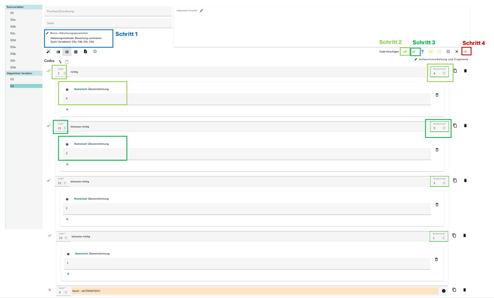
Schritt 1: Ableitungsmethode auswählen: Bewertung summieren + Basisvariablen auswählen
Schritt 2: Richtig-Code (Doppelter grüner Haken) auswählen. Code 1 benennen. Bei “Regel ändern” Numerische Übereinstimmung auswählen. Anzahl der korrekten Antworten für diesen Bewertungsfall eintragen (hier 4). Bewertung oben rechts auswählen (hier Bewertung = 4).
- Code 1: 4 von 4 Antworten korrekt (4 Credits)
Schritt 3: Für die PC-Codes den teilweise-richtig-Code (Ein grüner Haken) auswählen. Bezeichnungen der PC-Codes zu 21, 22, 23 etc. ändern. Bei “Regel ändern” Numerische Übereinstimmung auswählen + Anzahl der korrekten Antworten für diesen PC-Credit-Fall eintragen (hier 3 absteigend). Bewertung oben rechts anpassen (hier = 3 absteigend).
Code 21: 3 von 4 korrekt (3 Credits)
Code 22: 2 von 4 korrekt (2 Credits)
Code 23: 1 von 4 korrekt (1 Credit)
Schritt 4: Rotes Kreuz für “falsch- AUTOMATISCH” auswählen, um alle anderen Antworten als automatisch falsch abzufangen.
- Falsch Code: Keine Antwort korrekt (0 Credits)
1.4. Zuordnen (Variante 2)
Anmerkung: 1 Element pro Ablegeliste; mind. 1 Element bleibt übrig
Beispielaufgabe: Partial Credit Dummy „DnD_Bild_Text”
IQB-Studio-Link: https://iqb-studio.de/#/a/1329/149220/preview
Itemformat: Zuordnen mit 6 Elementen x 5 Ablegelisten
Partial Credit Prinzip: elementweise 0-1-2-3-4-5
Bewertung: 0-0-0-0-1-2 (Bei Übereinstimmung = 5 gibt es 2 Punkte, bei Überstimmung = 4 gibt es 1 Punkt und alles andere ergibt 0 Punkte.)
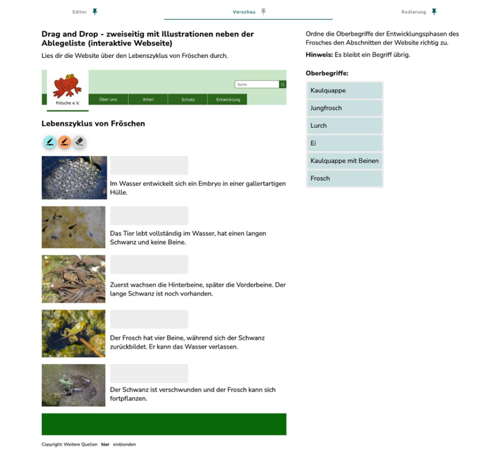
Geschlossene Kodierung der Basisvariablen 01a, 01b, 01c, 01d, 01e
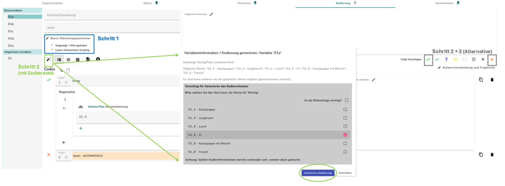
Schritt 1: Basis-/Ableitungsparameter anpassen (Häkchen bei “angezeigt = Wert geändert” und “leerer Antwortwert ist gültig”)
Schritt 2: Mit Zauberstab die korrektes Element auswählen (Hier 01_4; s. Allgemeine Hinweise für Kodieranweisung).
Rotes Kreuz für „falsch-AUTOMATISCH wird mit Zauberstab automatisch hinzugefügt.
Diese Schritte für alle Basisvariablen wiederholen.
Alternative Kodierung ohne Zauberstab:
Schritt 2: Richtig-Code (Doppelter grüner Haken) auswählen. Code 1 nennen. Jeweils korrektes Element in Übereinstimmung eintragen (Für Elementbezeichnung siehe Editor, für Kodieranweisung s. Allgemeine Hinweise). Dieser Schritt kann auch mit dem Zauberstab durchgeführt werden.
Schritt 3: Rotes Kreuz “falsch - AUTOMATISCH” für alle falschen Antworten auswählen.
Geschlossene Kodierung in der abgeleiteten Variable
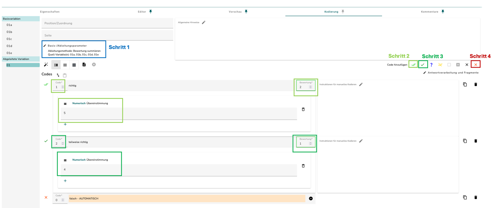
Schritt 1: Ableitungsmethode auswählen: Bewertung summieren + alle Basisvariablen auswählen 01a, 01b, 01c, 01d, 01e
Schritt 2: Richtig-Code (Doppelter grüner Haken) auswählen. Code 1 benennen. Bei Numerische Übereinstimmung maximale Anzahl korrekter Antworten eintragen (Hier Summenscore = 5). Bewertung = 2 als Full Credit auswählen.
- Code 1: 5 von 5 Antworten korrekt (2 Credits)
Schritt 3: Teilweise-Richtig-Code (Ein Grüner Haken) auswählen. Code 2 benennen. Numerische Übereinstimmung mit maximaler Anzahl korrekter Antworten – 1 eintragen (Hier = 4). Bewertung = 1 Credit auswählen.
- Code 2: 4 von 5 Antworten korrekt (1 Credit)
Schritt 4: Rotes Kreuz „falsch-AUTOMATISCH” auswählen. Falsch Code bei 0,1,2,3 Antworten sind korrekt (0 Credits).
1.5. Verbale Kurzantwort (Variante 1)
Anmerkung: 3 Eingabefelder
Beispielaufgabe: Prototypische Aufgabe „Lückentext_ST”
IQB-Studio-Link: https://iqb-studio.de/#/a/1329/149221/preview
Itemformat: Kurzantwort mit 3 Eingabenfelder
Partial Credit Prinzip: elementweise 0-1-2-3
Bewertung: 0-1-2-3 (Für jede korrekte Eingabe erhält SuS 1 Credit; FC = 3 (Alle Antworten korrekt), PC = 2 (2 von 3 korrekt); PC = 1 (1 von 3 korrekt); No Credit für 0 von 3 korrekt.)
Geschlossene Kodierung der Basisvariablen 01a,01b,01c
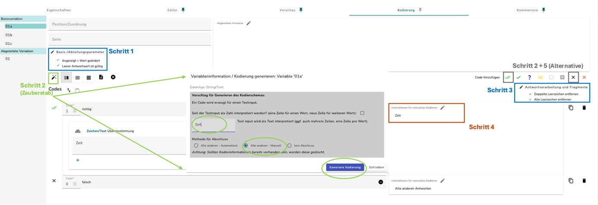
Schritt 1: Basis-/Ableitungsparameter anpassen (Häkchen bei “angezeigt = Wert geändert” und “leerer Antwortwert ist gültig”)
Schritt 2: Mit Zauberstab Lösungswort in das Textfeld eintragen. Bei Methode für Abschluss „Alle anderen – Manuell” auswählen. Kodierung Generieren auswählen.
Schritt 3: Bei Antwortverarbeitung und Fragmente „Alle Leerzeichen entfernen” und „Groß- und Kleinschreibung ignorieren” auswählen.
Schritt 4: Bei Instruktion für manuelles Kodieren, korrektes Lösungswort eintragen.
Jeder Schritt wird für jede Basisvariable mit passendem Lösungswort (s. Allgemeine Hinweise) wiederholt.
Alternative Kodierung ohne Zauberstab:
Schritt 2: Richtig-Code (Doppelter grüner Haken). Code 1 nennen. Lösungswort-Optionen bei „Zeichen/Text Übereinstimmung” eintragen. Bewertung = 1 auswählen.
Schritt 5: Schwarzes Kreuz „falsch” auswählen. Dieser Code dient der Möglichkeit zur Manuellen Kodierung (Falsche Antworten können im Nachhinein noch manuell geprüft werden.)
Geschlossene Kodierung der Abgeleiteten Variable 01
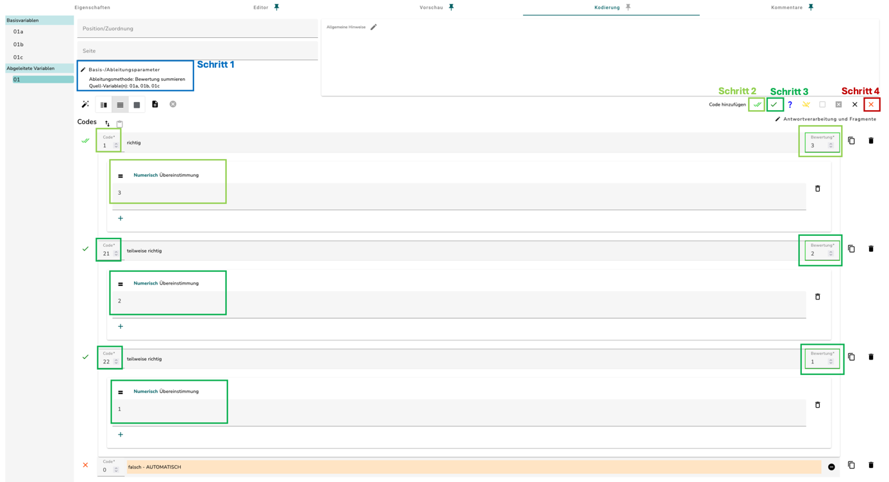
Schritt 1: Ableitungsmethode: Bewertung summieren auswählen. Quell-Variablen 01a,01b,01c auswählen.
Schritt 2: Richtig-Code (Doppelter grüner Haken) auswählen. Code 1 nennen. Numerische Übereinstimmung = 3 eintragen (wenn alle 3 Basisvariablen korrekt sind, erhält SuS 3 Full Credit). Oben rechts Bewertung = 3 auswählen.
- Code 1: 3 von 3 Antworten korrekt (3 Credits)
Schritt 3: Teilweise-Richtig-Code (Ein grüner Haken) 2xl auswählen. In Code 21 und Code 22 benennen. Bei „Numerische Übereinstimmung” absteigend = 2, 1 eintragen. Oben rechts bei Bewertung entsprechenden Wert auswählen. (Wenn also 2 von 3 Antworten korrekt sind, erhält SuS 2 Credits; wenn 1 von 3 Antworten korrekt ist, erhält SuS 1 Credit)
Code 21: 2 von 3 Antworten korrekt (2 Credit)
Code 21: 1 von 3 Antwort korrekt (1 Credit)
Schritt 4: Rotes Kreuz „falsch-AUTOMATISCH” auswählen (Wenn 0 von 3 Antworten korrekt sind, erhält SuS 0 Credits).
1.6. Verbale Kurzantwort (Variante 2)
Anmerkung: Reihenfolge der Antworten beliebig, Prüfung auf Einzigartigkeit!
Beispielaufgabe: Partial Credit Dummy „DeP_VerbaleKurzantwort”
IQB-Studio-Link: https://iqb-studio.de/#/a/1329/149930/preview
Itemformat: Kurzantwort mit 2 Eingabefeldern (Reihenfolge beliebig)
Partial Credit Prinzip: elementweise 0-1-2
Bewertung: 0-1-2 (1 Credit pro Eingabefeld; Für jede korrekte Eingabe erhält SuS 1 Credit; FC = 2 (Alle Antworten korrekt), PC = 1 (1 von 2 korrekt oder 1 doppelt))
ACHTUNG: Die Kodierung hier ist etwas komplexer, da auf Einzigartigkeit geprüft wird
Geschlossene Kodierung für Basisvariablen 01a, 01b
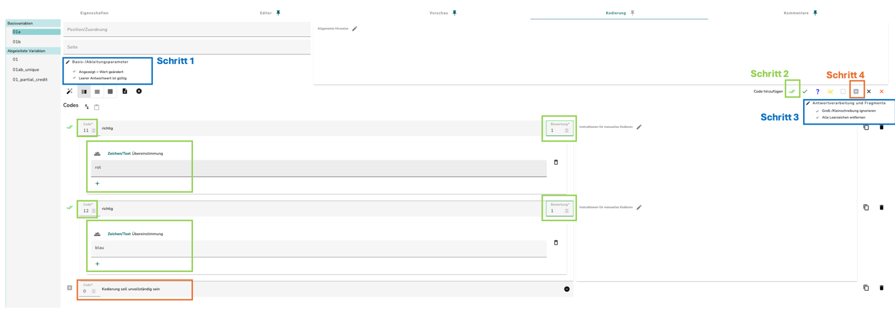
Hier wird definiert, dass in beiden Elementen sowohl Antwort „rot” als auch Antwort „blau” korrekt sein kann.
Schritt 1: Basis-/Ableitungsparameter anpassen (Häkchen bei “angezeigt = Wert geändert” und “leerer Antwortwert ist gültig”)
Schritt 2: Zwei Richtig-Codes auswählen (doppelter grüner Haken). In Code 11 und Code 12 benennen. Bei Code 11 Zeichen/ Text Übereinstimmung = „rot” eintragen, bei Code 12 Zeichen/ Text Übereinstimmung = „blau” eintragen. Oben rechts Bewertung = 1 jeweils auswählen.
Schritt 3: Wenn es sich um ein Textantworten handelt: Bei Antwortverarbeitung und Fragmente „Alle Leerzeichen entfernen” und „Groß- und Kleinschreibung ignorieren” auswählen.
Schritt 4: Graues Kreuz „Kodierung soll unvollständig sein” auswählen.
Diese Schritte für Basisvariable 01a und 01b wiederholen.
Geschlossene Kodierung für Abgeleitete Variable 01ab_unique
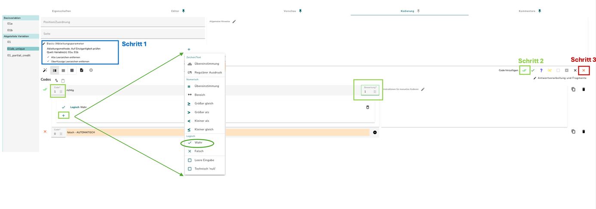
Hier wird die SuS-Response auf Einzigartigkeit geprüft. Full Credit erhalten SuS nur, wenn zwei unterschiedliche, korrekte Werte eingetragen werden.
Schritt 1: Bei Basis-/ Ableitungsparameter auswählen: Ableitungsmethode: Auf Einzigartigkeit prüfen + Quell-Variablen: 01a, 01b auswählen. Außerdem „Alle Leerzeichen entfernen” + „Überflüssige Leerzeichen entfernen” auswählen.
Schritt 2: Richtig-Code (Zwei Grüne Haken) auswählen. Code 1 nennen. Bei Regel ändern „Logisch Wahr” auswählen. Oben rechts Bewertung = 1 auswählen.
Schritt 3: Rotes Kreuz „falsch-AUTOMATISCH” auswählen.
Geschlossene Kodierung für Abgeleitete Variable 11_partial_credit
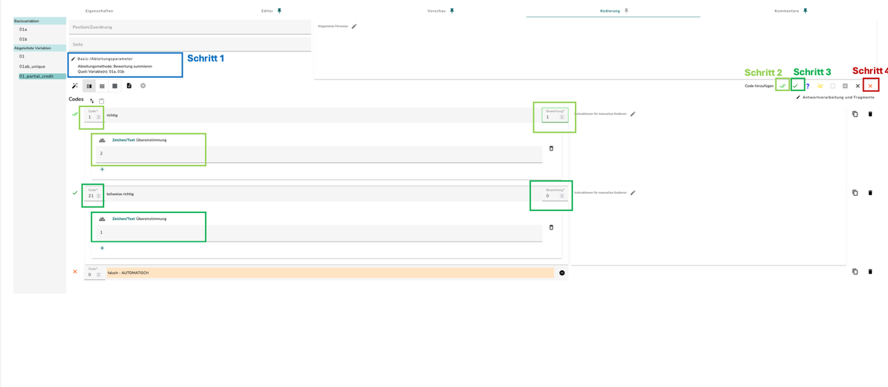
Diese Abgeleitete Variable hilft der finalen abgeleiteten Variable 01 zu definieren, dass bei nur einer korrekten Antwort oder zweimal der gleichen Antwort, 1 Credit vergeben wird.
Schritt 1: Ableitungsmethode: Bewertung summieren auswählen. Quellvariablen 01a und 01b auswählen.
Schritt 2: Richtig-Code (Doppelter grüner Haken) auswählen. Code 1 nennen. Zeichen/Text Übereinstimmung = 2 auswählen. Oben recht Bewertung = 1 auswählen.
Schritt 3: Teilweise-Richtig-Code (ein grüner Haken) auswählen. Code 21 nennen. Zeichen/Text Übereinstimmung = 1 auswählen. Oben recht Bewertung = 0 auswählen.
Schritt 4: Rotes Kreuz „falsch-AUTOMATISCH” auswählen.
Geschlossene Kodierung für Abgeleitete Variable 01
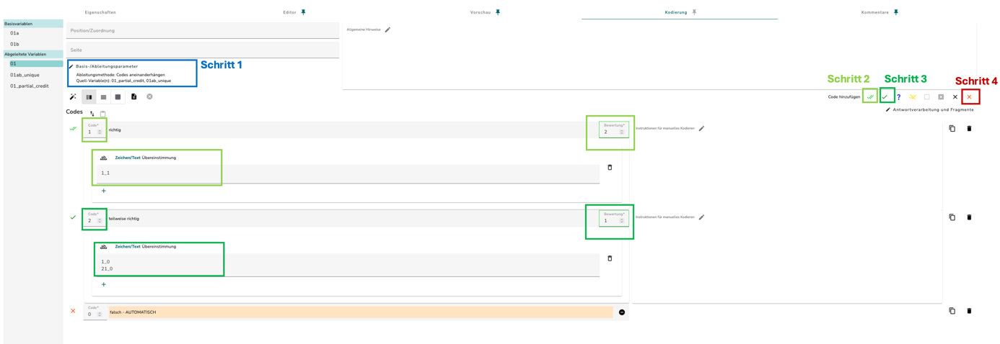
Hier werden alle abgeleiteten Variablen nochmal abgeleitet, um die finale Punktevergabe festzulegen.
Schritt 1: Ableitungsmethode: Codes aneinanderhängen auswählen. Quellvariablen 0 1_partial_credit, 01ab_unique auswählen.
Schritt 2: Richtig-Code (Doppelter grüner Haken) auswählen. Code 1 nennen. Zeichen/Text Übereinstimmung „1_1” eintragen. (Wenn SuS bei PC-Variable den Richtig-Code hat und bei Unique-Variable den Richtig-Code hat, erhält SuS 2 Full Credits). Oben recht Bewertung = 2 auswählen.
- Code 1: 2 von 2 Antworten korrekt (2 Credits)
Schritt 3: Teilweise-Richtig-Code (Ein grüner Haken) auswählen. Code 21 nennen. Zeichen/Text Übereinstimmung „1_0”, „21_1” nennen. (Wenn SuS nur eine korrekte Antwort hat oder zweimal dieselbe korrekte Antwort, erhält SuS 1 Credit). Oben rechts Bewertung = 1 auswählen.
- Code 2: 1 von 2 Antworten korrekt (1 Credits)
Schritt 4: Rotes Kreuz „falsch-AUTOMATISCH” auswählen.
2. Mathe Primar (MaP)
2.1. Langantwort
Beispielaufgabe: MaP Langantwort Dummy
IQB-Studio-Link: https://iqb-studio.de/#/a/1329/149909/schemer
Itemformat: Langantwort mit 1 Eingabefeld
Partial Credit Prinzip: inhaltlich 0-1
Bewertung: 0-1-2 (2 Credits bei korrekter Antwort, 1 Credit bei teilweise korrekter Antwort)
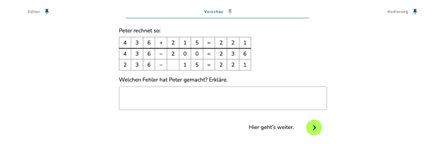
(Manuelle) Kodierung der Basisvariable 01
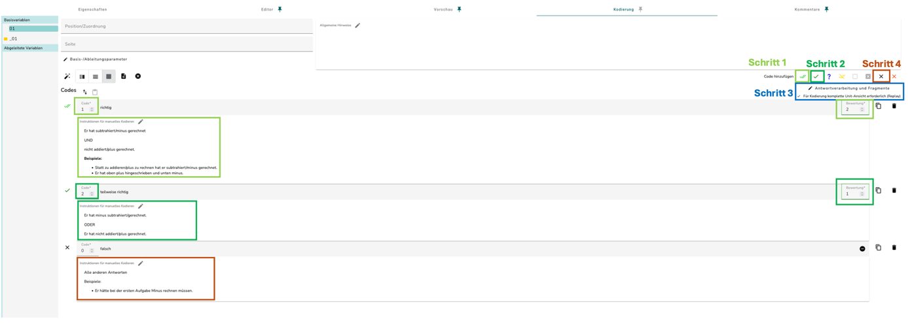
Schritt 1: Richtig-Code (Doppelter grüner Haken) auswählen. Code 1 nennen. Bei Instruktionen für manuelles Kodieren passende Kodieranweisung eintragen. Bewertung = 2 auswählen.
Schritt 2: Teilweise-Richtig-Code (Ein grüner Haken) auswählen. Code 2 nennen. Bei Instruktionen für manuelles Kodieren passende Kodieranweisung eintragen. Bewertung = 1 auswählen.
Schritt 3: Bei Antwortverarbeitung und Fragment „Für Kodierung komplette Unit-Ansicht erforderlich (Replay)” auswählen.
Schritt 4: Schwarzes Kreuz („falsch”) auswählen. Bei Instruktionen für manuelles Kodieren passende Kodieranweisung eintragen.
2.2. MC und Langantwort
Beispielaufgabe: PC Dummy „MC_und_Langantwort”
IQB-Studio-Link: https://iqb-studio.de/#/a/1329/149322/schemer
Itemformat: 1 MC mit 1 Langantwort-Eingabefeld
Partial Credit Prinzip: inhaltlich 0-1
Bewertung: 0-1-2 (Bei korrekter MC-Auswahl UND korrekter Langantwort erhält SuS 2 Credits, bei korrekter MC-Auswahl UND teilweise-korrekter Langantwort erhält SuS 1 Credit. Bei falscher MC-Auswahl = No Credit. Bei korrekter MC-Auswahl UND falscher Langantwort = No Credit)
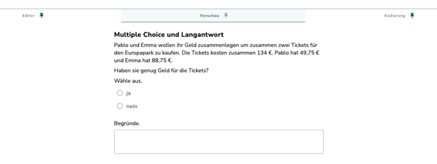
Geschlossene Kodierung der Basisvariablen 01a
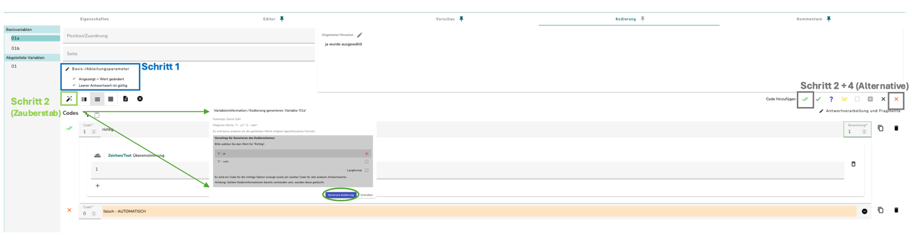
Schritt 1: Basis-/Ableitungsparameter anpassen (Häkchen bei “angezeigt = Wert geändert” und “leerer Antwortwert ist gültig”)
Schritt 2: Mit Zauberstab die richtige Antwortoption (1 = „stimmt”, 2 = „stimmt nicht”) auswählen (s. Allgemeine Hinweise für Kodieranweisung). Rotes Kreuz (Falsch – automatisch) wird mit Zauberstab automatisch hinzugefügt.
Alternative Kodierung ohne Zauberstab:
Schritt 2: Richtig-Code (Doppelter grüner Haken) auswählen. Code 1 nennen. Bei Zeichen/ Text Übereinstimmung Wert 1 (für „ja”; s. Kodieranweisung) eintragen. Bewertung = 1 auswählen.
Schritt 3: Rotes Kreuz „falsch-AUTOMATISCH” auswählen.
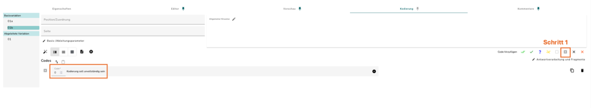
(Manuelle) Kodierung der Basisvariable 01b
Schritt 1: Als Falsch-Code „Kodierung soll unvollständig sein” auswählen.
Geschlossene Kodierung der Abgeleiteten Variable 01
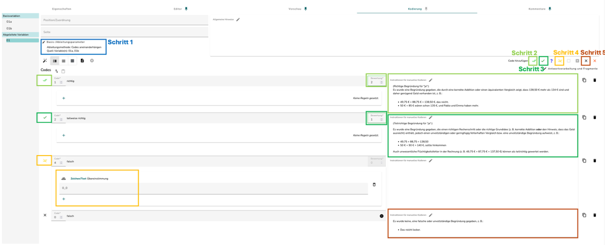
Schritt 1: Bei Basis-/Ableitungsparameter Ableitungsmethode: Codes aneinanderhängen auswählen + Quellvariablen 01a, 01b auswählen
Schritt 2: Richtig-Code (Doppelter grüner Haken) auswählen. Code 1 benennen. Keinen Regelsatz hinzufügen. Bewertung = 2 auswählen. Kodieranweisung für richtige Antwort bei Instruktion für manuelles Kodieren eintragen.
- Code 1: MC UND Langantwort korrekt (2 Credits)
Schritt 3: Teilweise-Richtig-Code (Ein grüner Haken) hinzufügen. Code 2 benennen. Keinen Regelsatz hinzufügen. Bewertung = 1 auswählen. Kodieranweisung für teilrichtige Antwort bei Instruktion für manuelles Kodieren eintragen.
- Code 2: MC korrekt UND Langantwort teilweise korrekt (1 Credits)
Schritt 4: Gelbe doppelte Haken „Falsch-Code” auswählen. Bei Zeichen/ Text Übereinstimmung „0_0” eintragen. Bewertung = 0 auswählen.
Schritt 5: Schwarzes Kreuz „Falsch: Alle anderen Antworten” auswählen. Kodieranweisung für falsche Antwort Zeichen/ Text Übereinstimmung eintragen.
2.3. Numerische Kurzantwort
Anmerkung: mind. 3 Eingabefelder (z.B. Rechenpäckchen)
Beispielaufgabe: PC Dummy „Rechenaufgabe”
IQB-Studio-Link: https://iqb-studio.de/#/a/1329/149224/preview
Itemformat: Rechenpäckchen mit 3 Eingabefeldern
Partial Credit Prinzip: elementweise 0-1-2-3 (hier für 3 Eingabefelder)
Bewertung: 0-0-1-2 (Full Credit für Summenscore -1. Wenn alle 3 Antworten korrekt, erhält SuS 2 Credits. Wenn 2 von 3 korrekt, erhält SuS 1 Credit. Wenn 0 von 3 korrekt, erhält SuS 0 Credits.)
Geschlossene Kodierung der Basisvariable 01a,01b, 01c
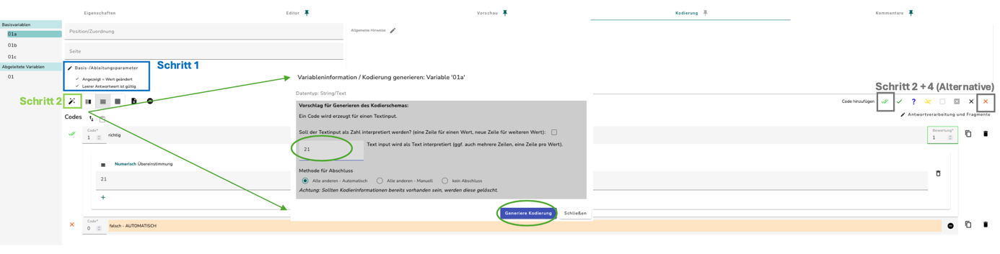
Schritt 1: Basis-/Ableitungsparameter anpassen (Häkchen bei “angezeigt = Wert geändert” und “leerer Antwortwert ist gültig”).
Schritt 2: Mit Zauberstab die Lösungszahl eintragen (Hier „21”) (s. Allgemeine Hinweise für Kodieranweisung). Rotes Kreuz (Falsch – automatisch) wird mit Zauberstab automatisch hinzugefügt.
Alternative Kodierung ohne Zauberstab:
Schritt 2: Richtig-Code (Doppelter grüner Haken) auswählen. Code 1 benennen. Bei Numerische Übereinstimmung die Lösungszahl (s. Kodieranweisung) eintragen. Bewertung = 1 auswählen.
Schritt 3: Rotes Kreuz „falsch-AUTOMATISCH” auswählen.
Diese Schritte bei allen drei Basisvariablen 01a, 01b, 01c wiederholen.
Achtung! Liegt die Lösungszahl im vierstelligen Bereich (oder mehr), muss ein zweiter Richtig-Code (Code 11 und Code 12) angelegt werden, um unterschiedliche Schreibweisen mithilfe eines regulären Ausdrucks abzudecken. Dies ist beispielsweise bei der Basisvariable 01c der Fall.
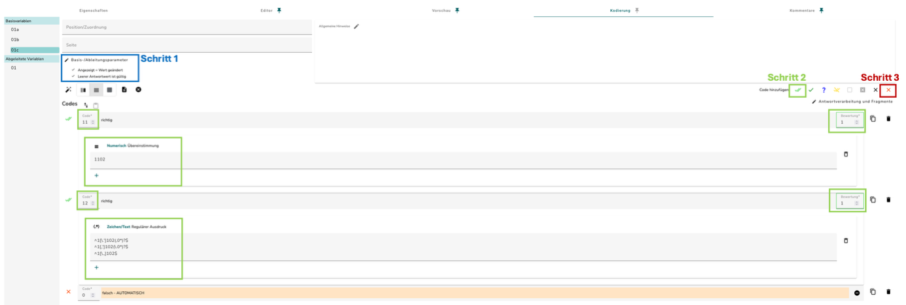
Geschlossene Kodierung der abgeleiteten Variable 01
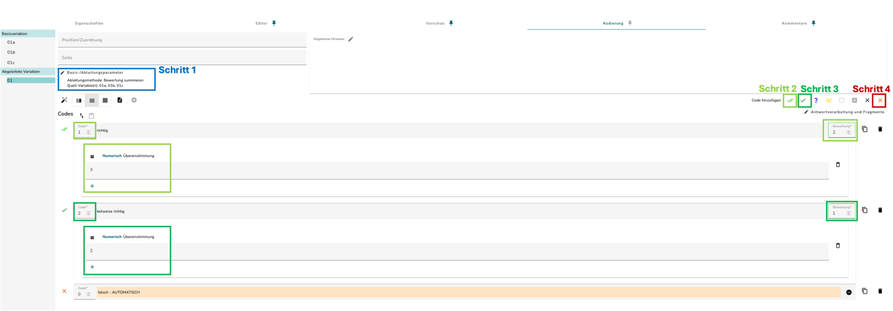
Schritt 1: Bei Basis-/Ableitungsparameter Ableitungsmethode: Bewertung summieren auswählen + Quellvariablen 01a, 01b, 01c auswählen
Schritt 2: Richtig-Code (Doppelter grüner Haken) auswählen. Code 1 benennen. Numerische Übereinstimmung eintragen mit maximal zu erreichenden richtigen Antworten (Summenscore = Anzahl der Basisvariablen). Bewertung Summenscore -1 auswählen (hier = 2).
- Code 1: 3 von 3 Antworten korrekt (2 Credits)
Schritt 3: Teilweise-Richtig-Code (Ein grüner Haken) hinzufügen. Code 2 benennen. Numerische Übereinstimmung (maximale Anzahl korrekter Antworten – 1, hier = 2) eintragen. Bewertung auf Summenscore -2 auswählen (Hier = 1).
- Code 2: 2 von 3 Antworten korrekt (1 Credits)
Schritt 4: Rotes Kreuz „falsch-AUTOMATISCH” auswählen.
2.4. Complex Multiple Choice
Anmerkung: Aufgabengruppe “Standardrepräsentanten”
Beispielaufgabe: PC Dummy „CMC_4x2”
IQB-Studio-Link: https://iqb-studio.de/#/a/1329/149219/preview
Itemformat: CMC mit 4 Zeilen x 2 Auswahloptionen
Partial Credit Prinzip: elementweise 0-1-2-3-4
Bewertung: 0-0-0-1-2 (Full Credit = 2 Punkte, Partial Credit = 1 Punkt. Wenn alle vier Zeilen korrekt sind, erhält SuS 2 Credits, wenn 3 von 4 Zeilen korrekt sind, erhält SuS 1 Credit, wenn 0 bis 2 Zeilen korrekt, erhält SuS 0 Credits.)
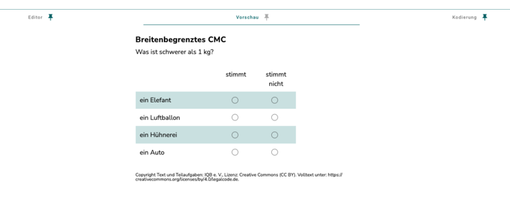
Geschlossene Kodierung der Basisvariablen 01a, 01b, 01c, 01d
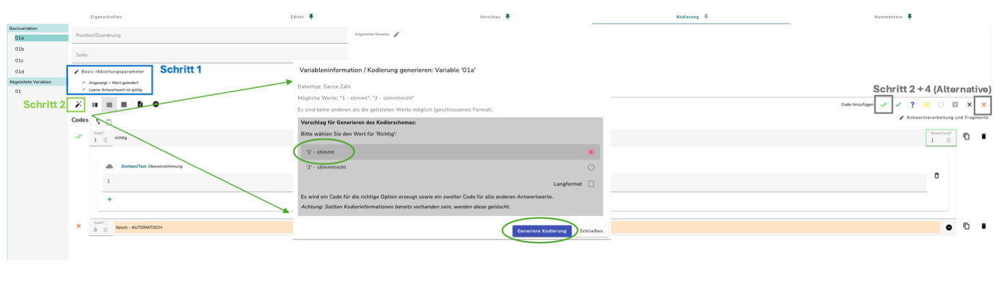
Schritt 1: Basis-/Ableitungsparameter anpassen (Häkchen bei “angezeigt = Wert geändert” und “leerer Antwortwert ist gültig”).
Schritt 2: Mit Zauberstab die richtig Antwortoption (1 = „stimmt”, 2 = „stimmt nicht”) auswählen (s. Allgemeine Hinweise für Kodieranweisung). Rotes Kreuz (Falsch – automatisch) wird mit Zauberstab automatisch hinzugefügt.
Alternative Kodierung ohne Zauberstab
Schritt 2: Richtig-Code (Doppelter grüner Haken) auswählen. Code 1 benennen. Zeichen/Text Übereinstimmung auswählen und 1 = stimmt/ 2 = stimmt nicht eintragen (s. Allgemeine Hinweise).
Schritt 3: Rotes Kreuz „falsch-AUTOMATISCH” auswählen.
Diese Schritte bei allen vier Basisvariablen wiederholen.
Geschlossene Kodierung der abgeleiteten Variablen 01
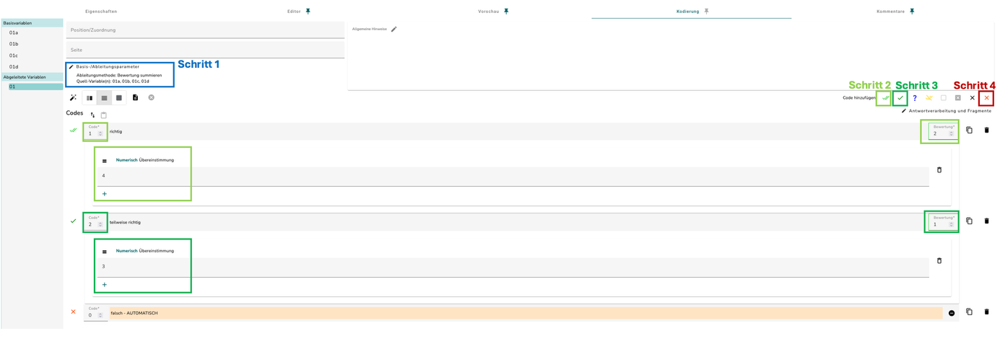
Schritt 1: Basis-/Ableitungsparameter auswählen: Ableitungsmethode: Bewertung summieren + Quell-Variablen auswählen: 01a, 01b, 01c, 01d
Schritt 2: Richtig-Code (Doppelter grüner Haken) auswählen. Code 1 nennen. Bei Numerische Übereinstimmung die maximale Anzahl an korrekten Antworten eintragen (hier Summenscore = 4). Bei Bewertung = 2 auswählen.
- Code 1: 4 von 4 Antworten korrekt (2 Credits)
Schritt 3: Teilweise-Richtig-Code (Ein grüner Haken) auswählen. Code 2 nennen. Bei Numerische Übereinstimmmung Summenscore -1 eintragen (hier = 3). Oben rechts Bewertung auf Maximale Bewertung -1 setzen (Hier = 1).
- Code 2: 3 von 4 Antworten korrekt (1 Credit)
Schritt 4: Rotes Kreuz „falsch-AUTOMATISCH” auswählen.
2.5. Zuordnen (Variante 1)
Anmerkung: Unendlich viele Elemente (Einstellung „Elemente kopieren”) x 4 Ablegeliste (mind. 1 Element bleibt übrig
Beispielaufgabe: PC Dummy „MaP_DnD_V1”
IQB-Studio-Link: https://iqb-studio.de/#/a/1329/149338/preview
Itemformat: Zuordnen mit 3 Elementen x 4 Ablegelisten
Partial Credit Prinzip: elementweise 0-1-2-3-4
Bewertung: 0-0-0-1-2 (Full Credit = 2 Punkte, Partial Credit = 1 Punkt. Wenn alle vier Zeilen korrekt sind, erhält SuS 2 Credits, wenn 3 von 4 Zeilen korrekt sind, erhält SuS 1 Credit, wenn 0 bis 2 Zeilen korrekt, erhält SuS 0 Credits.)
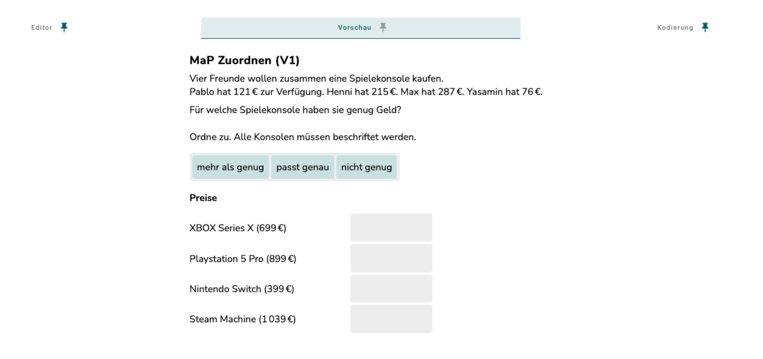
Besonderheit dieses Formats: Anzahl der Elemente in den Ausgangslisten ist größer ist als die Anzahl der Ablegelisten. Nach der Zuordnung = mind. 1 Element bleibt übrig. Das muss nicht zwingend mit der Einstellung „Elemente kopieren” erfolgen, sondern kann auch über mehrere „einmal verwendbare Elemente” gehen.
Geschlossene Kodierung der Basisvariablen 01a, 01b, 01c, 01d
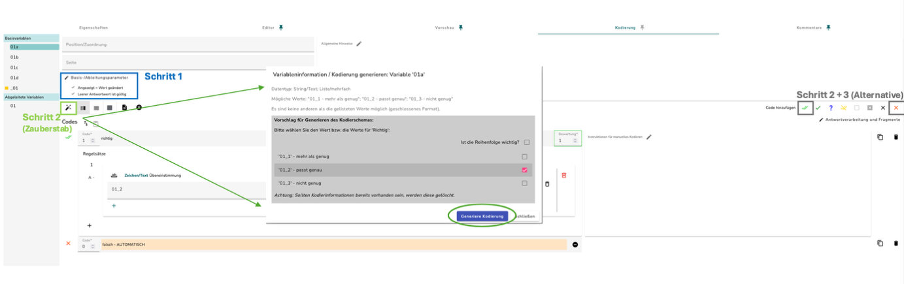
Schritt 1: Basis-/Ableitungsparameter anpassen (Häkchen bei “angezeigt = Wert geändert” und “leerer Antwortwert ist gültig”).
Schritt 2: Mit dem Zauberstab das passende Zuordnungs-Element auswählen (s. Kodieranweisung; hier: „01_2”). Rotes Kreuz (Falsch – automatisch) wird mit Zauberstab automatisch hinzugefügt.
Diese Schritte für alle Basisvariablen 01a, 01b, 01c, 01d wiederholen.
Alternative Kodierung ohne Zauberstab
Schritt 2: Richtig-Code (Doppelter grüner Haken) auswählen. Code 1 nennen. Bei Zeichen/Text Übereinstimmung das passende Zuordnungs-Element auswählen (s. Kodieranzweisung). Bei Bewertung = 1 auswählen.
Schritt 3: Rotes Kreuz „falsch-AUTOMATISCH” auswählen.
Diesen Schritt für alle Basisvariablen 01a, 01b, 01c, 01d wiederholen.
Geschlossene Kodierung der abgeleiteten Variable 01
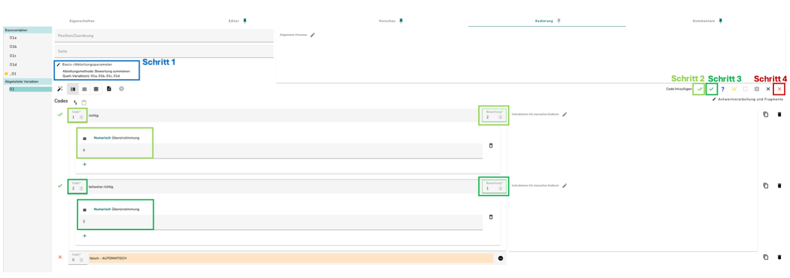
Schritt 1: Basis-/Ableitungsparameter auswählen: Ableitungsmethode: Bewertung summieren + Quell-Variablen auswählen: 01a, 01b, 01c, 01d
Schritt 2: Richtig-Code (Doppelter grüner Haken) auswählen. Code 1 nennen. Bei Numerische Übereinstimmung die maximale Anzahl an korrekten Antworten eintragen (hier Summenscore = 4). Bei Bewertung = 2 auswählen.
- Code 1: 4 von 4 Antworten korrekt (2 Credits)
Schritt 3: Teilweise-Richtig-Code (Ein grüner Haken) auswählen. Code 2 nennen. Bei Numerische Übereinstimmmung Summenscore -1 eintragen (hier = 3). Oben rechts Bewertung auf Maximale Bewertung -1 setzen (Hier = 1).
- Code 2: 3 von 4 Antworten korrekt (1 Credits)
Schritt 4: Rotes Kreuz „falsch-AUTOMATISCH” auswählen.
2.6. Zuordnen (Variante 2)
Anmerkung: Unendlich viele Elemente (Einstellung „Elemente kopieren”) x 9 Ablegeliste (mind. 1 Element bleibt übrig; Zuordnungskombinationen, Reihenfolge der Elemente UND zeilenweise Einzigartigkeit relevant
Beispielaufgabe: PC Dummy „MaP_Zuordnen V2”
IQB-Studio-Link: https://iqb-studio.de/#/a/1329/149938/preview
Itemformat: Zuordnen mit unendlich vielen Elementen x 9 Ablegelisten mit Zuordnungskombinationen, Reihenfolge der Elemente UND zeilenweise Einzigartigkeit relevant
Partial Credit Prinzip: zeilenweise 0-1-2-3
Bewertung: 0-0-1-2 (Full Credit = 2 Punkte, Partial Credit = 1 Punkt. Wenn alle 3 Zeilen korrekt sind, erhält SuS 2 Credits, wenn 2 von 3 Zeilen korrekt sind, erhält SuS 1 Credit, wenn 0 oder 1 Antwort korrekt, erhält SuS 0 Credits)
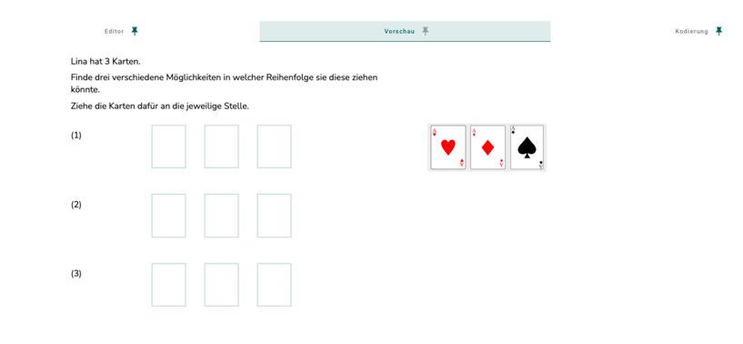
Geschlossene Kodierung der Basisvariable 01a_1, 01a_2, 01a_3, 01b_1, 01b_2, 01b_3, 01c_1, 01c_2, 01c_3
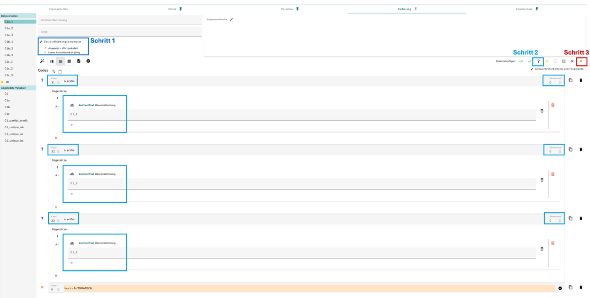
Schritt 1: Basis-/Ableitungsparameter anpassen (Häkchen bei “angezeigt = Wert geändert” und “leerer Antwortwert ist gültig”).
Schritt 2: 3x zu-Prüfen-Code (Blaues Fragezeichen) auswählen. Code 31, Code 32, Code 33 nennen. Bei Zeichen/Text Übereinstimmung Zuordnungs-Element auswählen (s. Kodieranweisung). Bei Bewertung = 0 auswählen.
Jedes Zuordnungs-Element erhält einen zu-prüfen-Code, welcher in der abgeleiteten Variable auf die Reihenfolge und Einzigartigkeit geprüft wird.
Schritt 4: Rotes Kreuz „falsch-AUTOMATISCH” auswählen.
Diese Schritte für alle Basisvariablen wiederholen.
Geschlossene Kodierung der abgeleiteten Variable 01_unique_ab, 01_unique_ac, 01_unique_bc
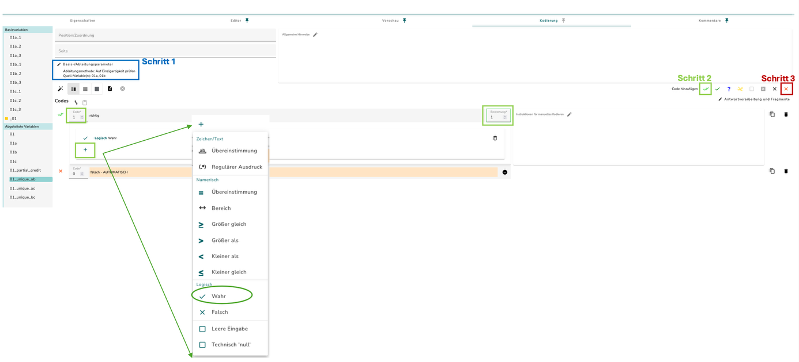
In dieser abgeleiteten Variable wird geprüft, dass sich keine der Kombinationen wiederholen.
Schritt 1: Bei Basis-/Ableitungsparameter die Ableitungsmethode : „Auf Einzigartigkeit prüfen” auswählen. Quell-Variablen: 01a, 01b auswählen (bzw. 01a, 01c ODER 01b, 01c)
Schritt 2: Richtig-Code (doppelter grüner Haken) auswählen. Code 1 nennen. Bei dem Plus-Zeichen als Regel „Logisch Wahr” auswählen. Bewertung = 1 auswählen.
Schritt 3: Rotes Kreuz „falsch-AUTOMATISCH” auswählen.
Diese Schritte wiederholen für 01_unique_ab, 01_unique_ac, 01_unique_bc
Geschlossene Kodierung der abgeleiteten Variable 01_partial_credit
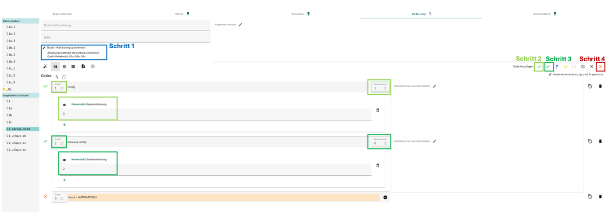
Schritt 1: Bei Basis-/Ableitungsparameter die Ableitungsmethode : „Bewertung summieren” auswählen. Quell-Variablen: 01a, 01b, 01c auswählen
Schritt 2: Richtig-Code (doppelter grüner Haken) auswählen. Code 1 nennen. Bei Numerische Übereinstimmung = 3 eintragen. Bewertung = 1 auswählen.
Schritt 3: Teilweise-Richtig-Code (ein grüner Haken) auswählen. Code 2 nennen. Bei Numerische Übereinstimmung = 2 eintragen. Bewertung = 0 auswählen.
Schritt 4: Rotes Kreuz „falsch-AUTOMATISCH” auswählen.
Geschlossene Kodierung der abgeleiteten Variable 01a, 01b, 01c
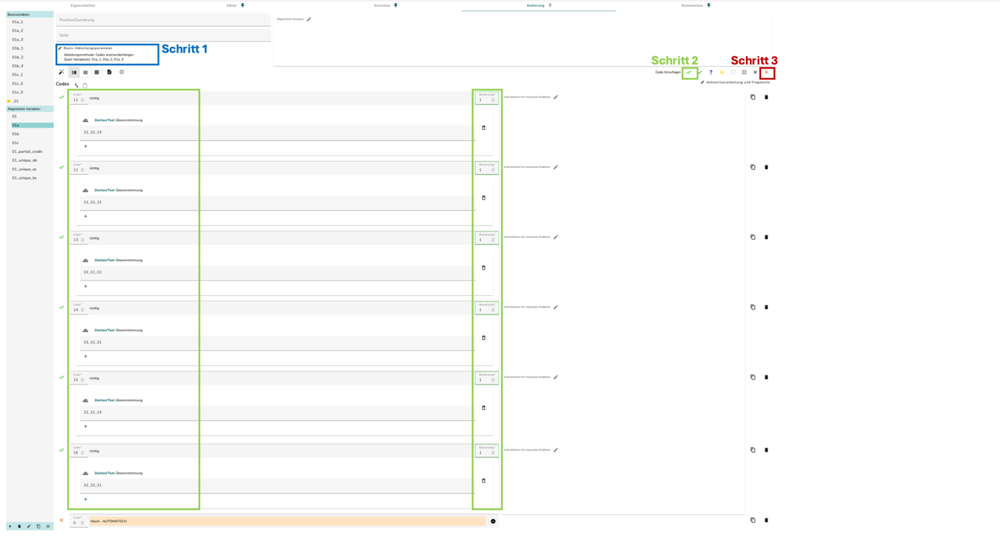
Schritt 1: Bei Basis-/Ableitungsparameter die Ableitungsmethode : „Codes aneinanderhängen” auswählen. Quell-Variablen: 01a_1, 01a_2, 01a_3 auswählen (bzw. alle Basisvariablen von 01b oder 01c)
Schritt 2: 6x Richtig-Code (doppelter grüner Haken) auswählen. Code 11 bis 16 nennen. Bei Zeichen/Text Übereinstimmung alle möglichen Kombinationen der zu-Prüfen-Code aus den Basisvariablen als aneinander gehängte Codes eintragen (31_32_33, 31_33_32 etc.). Bewertung = 1 auswählen.
Schritt 3: Rotes Kreuz „falsch-AUTOMATISCH” auswählen.
Geschlossene Kodierung der abgeleiteten Variable 01
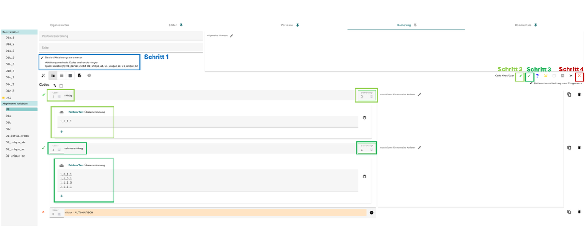
Schritt 1: Bei Basis-/Ableitungsparameter die Ableitungsmethode : „Codes aneinanderhängen” auswählen. Quell-Variablen: 01_partial_credit, 01_unique_ab, 01_unique_ac, 01_unique_bc auswählen.
Schritt 2: Richtig-Code (doppelter grüner Haken) auswählen. Code 1 nennen. Bei Zeichen/Text Übereinstimmung die aneinander gehängten Codes eintragen (1_1_1_1). Bewertung = 2 auswählen. (Wenn alle 3 Zeilen korrekt zugeordnet wurden und sich nicht wiederholen, erhält SuS 2 Credits).
- Code 1: 3 von 3 Antworten korrekt (2 Credits)
Schritt 3: Teilweise-Richtig-Code (ein grüner Haken) auswählen. Code 2 nennen. Bei Zeichen/Text Übereinstimmung die aneinander gehängten Codes eintragen (1_0_1_1 etc.). Bewertung = 1 auswählen. (Wenn nur 2 Zeilen korrekt oder sich 1 Kombination doppelt, erhählt SuS 1 Credit).
- Code 2: 2 von 3 Antworten korrekt (1 Credit)
Schritt 4: Rotes Kreuz „falsch-AUTOMATISCH” auswählen.